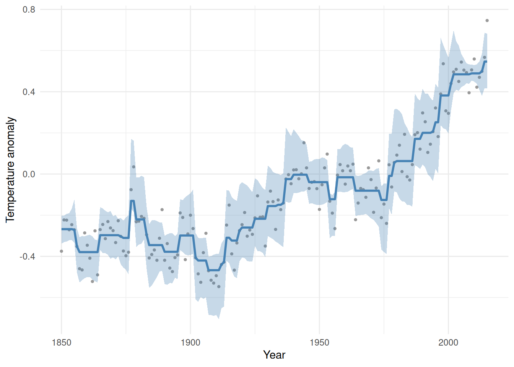

data(cdiac)
neariso_fit <- function(y, lambda) {
beta <- Variable(length(y))
prob <- Problem(Minimize(0.5 * sum((y - beta)^2) + lambda * sum(pos(diff(beta)))))
psolve(prob)
value(beta)
}13 The Bootstrap: Inference for Optimization-Based Estimators
NoteWhat you’ll be able to do
Attach standard errors and confidence bands to any CVXR estimate — even one with no closed-form formula — by re-solving the problem on resampled data. This is the bridge from optimization back to statistical inference.
13.1 Why this matters
Almost every model in this book produces a point estimate: solve the problem, read off value(beta), done. But a point estimate without a sense of its uncertainty is only half of a statistical answer. For ordinary least squares there is a textbook standard-error formula. For a lasso, a quantile fit, an isotonic fit, or any of the custom objectives CVXR makes easy, there usually isn’t one — the estimator is defined implicitly, as “the solution of this optimization problem.”
The bootstrap sidesteps the missing formula entirely. Its premise is simple: the sampling variability of an estimator can be approximated by refitting it on resampled data. Because a CVXR estimate is just a deterministic function of the data — run the solver — it slots straight into the bootstrap with nothing special required. That makes the bootstrap a near-universal companion to convex modeling:
If you can solve it once, you can bootstrap it.
13.2 A fit with no standard-error formula
Our estimator is a nearly-isotonic fit: least squares plus a penalty on downward steps, so it prefers a mostly-increasing curve without forcing strict monotonicity:
\[\underset{\beta}{\mbox{minimize}}\quad \tfrac12\sum_i (y_i-\beta_i)^2 + \lambda \sum_i (\beta_{i+1}-\beta_i)_+ .\]
We apply it to global-mean temperature anomalies (cdiac, shipped with CVXR). The fit is a one-liner; crucially, it is also a plain R function of a data vector — exactly the shape the bootstrap needs:
13.3 The bootstrap recipe
The boot package does the resampling bookkeeping; we just supply a statistic that refits on each resample. Every replicate is a fresh solve, so we keep the number of replicates modest:
fit_stat <- function(data, idx, lambda) {
s <- data[idx, ]
s <- s[order(s$year), ] # bootstrap resamples rows; restore time order
neariso_fit(s$annual, lambda)
}
set.seed(123)
bo <- boot(cdiac, statistic = fit_stat, R = 100, lambda = 0.44)bo$t0 is the fit on the original data; the R = 100 rows of bo$t are the refits on resampled data. From their spread we read off a 95% confidence band, one point at a time:
ci <- t(sapply(seq_len(nrow(cdiac)), function(i)
boot.ci(bo, conf = 0.95, type = "norm", index = i)$normal[-1]))
band <- data.frame(year = cdiac$year, annual = cdiac$annual,
est = bo$t0, lower = ci[, 1], upper = ci[, 2])ggplot(band, aes(year)) +
geom_point(aes(y = annual), color = "grey60", size = 0.8) +
geom_ribbon(aes(ymin = lower, ymax = upper), alpha = 0.3, fill = "steelblue") +
geom_line(aes(y = est), color = "steelblue", linewidth = 1) +
labs(x = "Year", y = "Temperature anomaly") +
theme_minimal()
The blue curve is the fit; the band is its bootstrap uncertainty — genuine inference for an estimator that has no formula, obtained purely by re-solving the convex problem on resampled data. The band widens where the data are sparse or noisy and tightens where they pin the curve down, exactly as inference should.
13.4 Bootstrapping is a parameter sweep
Every replicate solves the same problem with new data — precisely the situation the Parameter trick of Chapter 8 was built for. Promote the data (and \(\lambda\)) to Parameters, build the problem once, and each refit becomes a cheap re-solve instead of a fresh compilation. With hundreds or thousands of replicates that saving compounds, turning the bootstrap from “too slow to bother” into routine. The bootstrap is one of the best reasons to learn DPP.
13.5 Exercise
Exercise (⭐). The penalty weight \(\lambda = 0.44\) controls smoothness. Refit the temperature series at \(\lambda = 0\) and a large \(\lambda = 10\). What do the two extremes correspond to?
TipSolution
fit0 <- neariso_fit(cdiac$annual, 0)
fit10 <- neariso_fit(cdiac$annual, 10)
c(lambda0_matches_data = max(abs(fit0 - cdiac$annual)) < 1e-4,
lambda10_is_monotone = all(diff(fit10) >= -1e-4))lambda0_matches_data lambda10_is_monotone
TRUE TRUE At \(\lambda = 0\) there is no penalty, so the fit just reproduces the data. As \(\lambda \to \infty\) the penalty forces the downward steps to zero — a fully isotonic (monotone non-decreasing) fit.
13.6 Takeaways
- The bootstrap gives standard errors and confidence bands for any CVXR estimator by re-solving on resampled data — no formula required.
- The recipe is mechanical: wrap your
psolve()fit in a function of the data, hand it toboot, and summarize the replicates. - Because every replicate is the same problem with new data, the Chapter 8
Parametertrick makes a large bootstrap genuinely cheap.
See Near-Isotonic Regression for the underlying model.